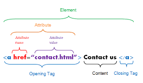

Tag are those which comes in between < angularbrackekts >
90% of tags are with Starting and Closing tag
10% Tags are self closing tag or Void tag or Empty tag
for eg . br, hr, img, input, meta etc
Start Tag - Some Content - End Tag
They provide some Additional information which Change the behaviour of Element. Always come in start tag
